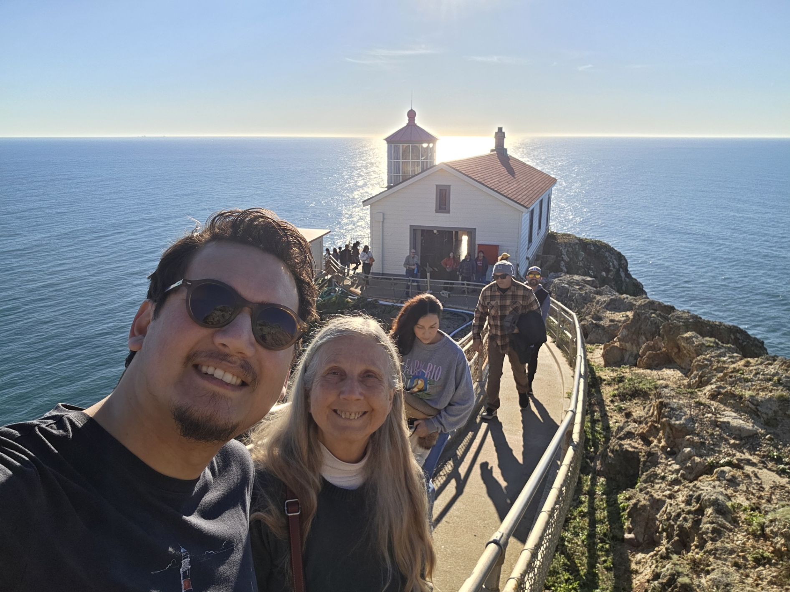
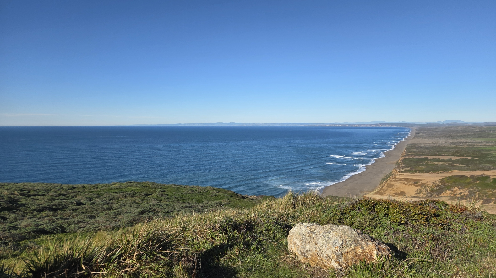
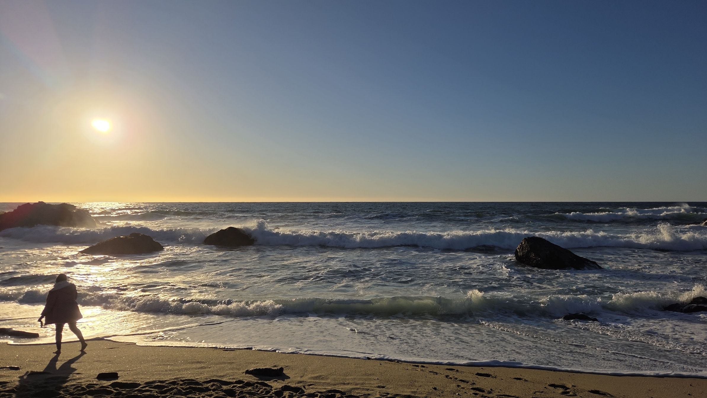

Originally known as the Valley of Heart’s Delight and nestled in among world famous apricot orchards, Silicon Valley most often refers to the region spanning from the suburbs just south of San Francisco to San Jose at the southern tip of the San Francisco Bay. The hypernym “Bay Area” extends this to further regions still, with North Bay communities like Berkeley and Oakland, the wide expansive nature of Marin County, the windswept Central Coast, and former seafaring towns like Monterey and Carmel by the Sea to the south.

As a resident of this industry-defining region, and as many before me, I cannot help but be humbled by the amazing opportunity that abounds here professionally. That said, and as cliché as it sounds, Silicon Valley is synonymous with a so-called “work hard, play hard” mentality. While some may argue that this is actually a major flaw, I would retort that, taken at face value, this is exactly what makes this region great. Having lived in Europe’s 35-hour-a-week work culture and Washington DC’s 5–8 p.m. traffic jams, I can confidently say that my idea of the perfect catch and release lies in the midst of this Pacific paradise.

Put simply, my ideal work environment at the time of this writing is somewhat of an intellectual playground, not bound by excessive bureaucracy or rote procedures, where one is free to explore, innovate, and iterate. I have been lucky to find that in my current employer. But to take the example of a perspiration-inducing workout, much of the fun often comes from a hot tub soak or sauna session after the intense effort. In the same vein, a five-day work week is best followed by the perfect blend of exploration, outdoor time, and art de table which, per capita, is unparalleled elsewhere in the Continental United States.

In this blog, I’ll be taking readers through the best ways I’ve found to spend a weekend in the Bay Area, with some special focuses on the Silicon Valley, San Francisco, Bay Area day trips, and the hiking and coffee shops that have come to define my way of disconnecting from my coveted computer screen. If you’ve made it this far, feel free to drop a comment below if there are questions you have or topics and areas of interest you’d like me to explore.
Leave a Comment